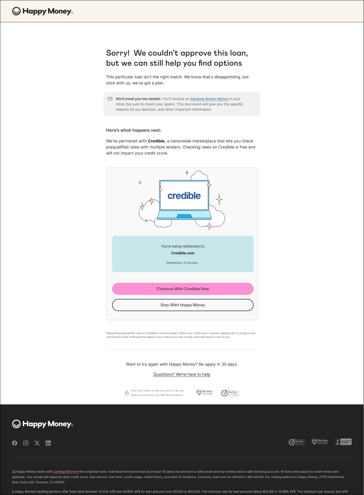

Case 07 of 08 · Advocacy
Happy Money / Decline experience / 2025
A decline shouldn’t be a dead end.
A declined application still belongs to a person looking for a way forward. I designed a partner referral that brought alternatives, consent, and disclosures into the same path, and held the line on keeping it simple.
- The problem
- A declined application ended with nothing for the person and nothing for the business.
- Why it mattered
- Declines are common. A dead end loses goodwill and a chance to help.
- My role
- Lead designer for the decline and referral experience, including its consent and disclosure pattern.
- What I changed
- A referral to a partner who might help, with consent built in and a short redirect.
- The result
- A reusable referral pattern that now powers refinance offers.
At a glance

01 / The situation
Nothing of value on the way out.
A decline ended the conversation.
The industry pattern is a decline waterfall: refer the person to a partner who might be able to serve them.
02 / The tension
A partner’s caution versus a person’s patience.
The partner’s legal team wanted an opt-in checkbox on the hand-off.
- Compliance
- Consent and disclosures had to be right.
- Emotion
- The person had just been told no.
- Time
- The negotiation stretched through the holidays.
03 / My read
Protect the person with the least patience left.
One more checkbox costs the most for someone who was just declined.
A decline is the end of the application.
A decline is a hand-off to another way forward.
04 / The moves
Lead with what’s possible.
Next step first
What the partner can offer comes first; the decline comes second.
Consent without a checkbox
Handled in the disclosure pattern instead.
Built for more partners
An extensible pattern the decline waterfall now relies on.
An opt-in checkbox
Friction for the person least able to absorb it. Product and design held the line.
05 / What changed
Volume moves. The pattern stays.
On refinance offers built on this pattern.
Consent without added friction.
Each new partner reuses the pattern.
In hindsight
Volume on any one surface fluctuates. A good pattern keeps paying for every partner after it.
Go deeperCollaboration, trade-offs, and what I’d do differently
Why traffic fell
Decline volume dropped as approvals improved, and the strategy moved to refinance offers on the same pattern.
How I brought people along
Add one real moment of influence: how you and product made the case against the checkbox with the partner’s legal team.
Next / 08 / Speed + measurement
A blank file to a measured launch in 29 days.
Let's talk
What are you working toward? Get in touch, read the resumé, or see all work.